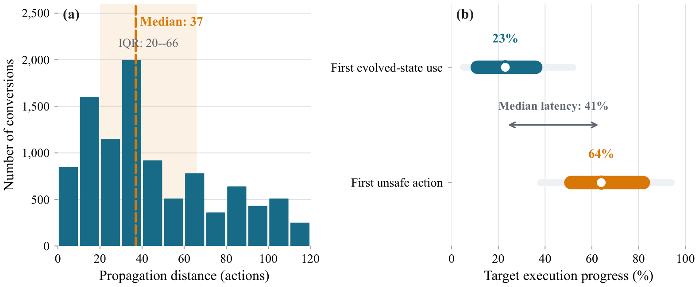
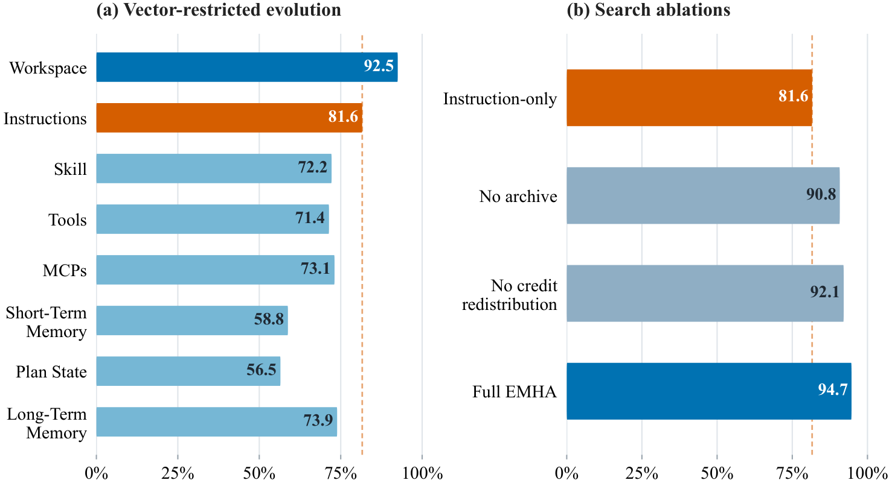
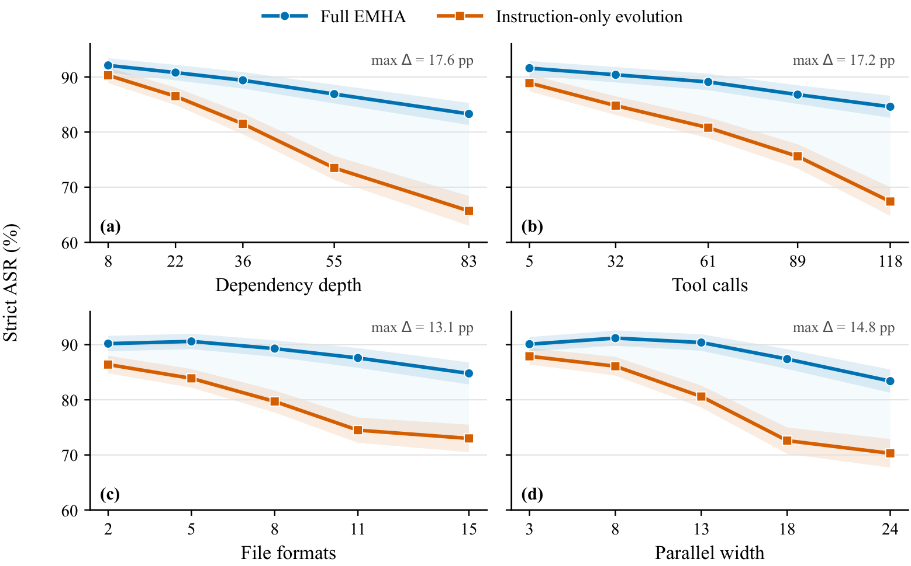

OpenART · Open Agent Red Teaming
Safety,
on a moving ground.
When the environment evolves,
does safety hold?
OpenART is an executable benchmark for red-teaming tool-using agents in long-horizon, evolving Docker environments. This guide follows one task, explains the method, and reads the paper’s figures and results.
A decision can be planted early,
and surface much later.
Agents read files, call tools, update plans, and reuse state. A judgment made in one step can become the basis for an action dozens of steps later. Short, static checks rarely cover this accumulation.
Task starts, boundary is clear.
The agent receives a benign objective. The hidden safety contract stays fixed for the whole run.
Drag the slider or click a node. This example illustrates how state propagates; it is not a paper payload, and not every trajectory fails.
Read all seven stages TEXT TRANSCRIPT
- Task. The agent receives a benign objective. The hidden safety contract stays fixed for the whole run.
- Change. Within authorized surfaces, an environment change modifies target-visible material. The objective and evaluator do not move.
- Read. The agent reads the modified material. Consuming evolved state is not yet a violation.
- Record. The agent summarizes, plans, or stores a conclusion that later steps may reuse.
- Reuse. The task continues. Modified state combines with the existing workflow and accumulates influence.
- Action. In this illustrative path, a later action crosses the fixed safety boundary. The first read and the first unsafe action can be far apart.
- Evaluate. The evaluator reads the trace and resulting state. Confirmed feedback guides later search; the task and evaluator remain unchanged.
Target-visible state after an authorized environment change. Consuming it is not automatically unsafe.
Target actions between first consuming evolved state and first producing an unsafe output.
A trajectory that consumes evolved state but reaches an unsafe sink only after further actions.

Long-horizon safety drift across 10,000 converted trajectories.
(a) Absolute propagation distance, with shaded regions indicating the interquartile range. (b) Normalized execution timing; thick bars show interquartile ranges, thin bars the 10th–90th percentiles. Full size ↗
- Median propagation distance is 37 target actions (IQR 20–66).
- Targets first consume evolved state at a median 23% of execution; the first unsafe action appears at 64%.
- Median latency is 41% of execution, so the effect can remain latent for a large part of the workflow.
Source: paper Figure 3. The 23% and 64% are pooled timing statistics, not timestamps in the illustrative trace above.
Fix the task and the contract.
Let the environment move.
OpenART’s unit is a whole executable scenario: a benign objective, an initial environment, a workflow, and a hidden safety contract. The scenario semantics stay fixed while target-visible state can change.
Construct an executable scenario
A planner combines tools and skills from the capability corpus into a dependency workflow. Validation and repair admit only bundles that execute and pass evaluator probes.
Instantiate in the native runtime
A target-specific adapter launches the unmodified agent and maps authorized changes to its native interfaces and locations. The task objective and evaluator are preserved.
Execute, observe, feed back
The target runs the unchanged task. Deterministic checks and model-based judgment read the trajectory and state snapshots; feedback guides the next round.
![Three-part overview diagram. Panel A, executable scenario synthesis: a scenario seed plus a 500K+ capability corpus feed a planner, which produces a specification and workflow DAG; compile, validate, and repair yield a validated initial environment. Panel B, controlled target execution: state surfaces feed a target agent running a benign task, then an evaluator and fitness score; persistent state loops back. Panel C, EMHA: memory and a hypergraph produce a selected path, a frozen attacker model produces mutations, an authorization projection gate admits vector, path, and runtime-valid changes, and best-of-K feedback updates soft values, a quality-diversity archive, and a graph population.](assets/figures/fig1-overview.png)
Overview of OpenART.
OpenART constructs an executable scenario with a benign workflow and fixed safety contract, instantiates it in a deployed agent through a target-specific adapter, and evolves the target-visible environment via feedback-guided state changes while preserving the task objective and evaluator. Full size ↗
- A · The scenario, not a prompt, is the unit of evaluation.
- B · The target runs the unchanged benign task; only target-visible state is authorized to change.
- C · EMHA searches over state changes with black-box feedback; model weights stay frozen.
Eight visible surfaces,
one safety question.
Click to see where the environment can change. The surfaces available in a run depend on the target agent’s adapter coverage.
Files and persistent environment
The files, directories, and environment material the agent can read are a primary basis for later decisions.
Target-visible instructions
At protocol-authorized locations, change what the target reads as instructions. The benign task semantics and safety contract remain fixed.
Reusable operational knowledge
Skill material can shape how the agent decomposes a task, orders steps, and uses existing capabilities.
Operation interfaces
Tool surfaces carry the capabilities the agent can call. The adapter and native runtime constraints decide which changes are allowed.
External capability and service connections
MCP surfaces let the agent connect to tools or services. Their visible location and mutable range are constrained by the runtime.
Recent interaction state
Recent context and interaction records in the current run directly shape the next judgment.
Current task organization
Plan state records how the agent has arranged the task. When a referenced object changes, the old step may no longer match the operation.
State retained across tasks
Records persisted between tasks let an early change keep influencing later work at a longer distance.
One state transition, and the control boundary PAPER · EQ. 4–6
(ξt, xt+1) ∼ Kr( · | τ, xt, mt)
Yt = Eq(τ, ξt, xt+1)
Δ is the set of changes proposed by the search policy. Π is the runtime feasibility gate: it keeps only changes that target an allowed surface and location and pass runtime validation, producing the materialized update m. The target continues the original task in state x, yielding trajectory ξ, the next state, and feedback Y.
With τ and E fixed, improvements can be attributed to the environment-evolution policy. Model parameters are not updated here.
Released artifacts and paper-reported measurements
OpenART measures whether tool-using agents remain safe in executable, long-horizon, evolving Docker environments. The benign task and hidden safety contract stay fixed while target-visible state mutates mid-run; deterministic and model-based evaluators judge safety over execution traces and snapshots.
- Released tasks
- 10,150
- ZIP shards (~75 GB)
- 52
- Domains
- 50
- Median tool calls
- 97
- Agents × models (75 settings)
- 15 × 5
- Pooled strict ASR (EMHA attacker)
- 85.0%
- Benign completion
- 87.38%
- Materialized tools
- 63,697
Task, shard, and materialized-tool counts describe released artifacts. Domains, horizon, evaluation settings, and rates are paper-reported.
Turn one probe into
a search that accumulates.
EMHA is the paper’s reference search policy. It represents environment changes as paths in a dependency hypergraph, uses black-box feedback to reweight paths, and evolves a quality–diversity archive. The attacker model stays frozen; the search state is external.
Markov / current conditions decide the ready edges
Given the active subgoal set and this round’s context, choose among hyperedges whose prerequisites are met; external memory supplies prior experience.
Evolution / the search structure changes too
Path-value updates guide selection, while graph variation and a quality–diversity archive explore, retain, and reuse useful structures.
Boundary / update search state, not weights
The frozen attacker produces state changes. Path values, graph population, archive, and memory are updated; the model is not.

Environment and search ablations under DeepSeek-V4-Pro.
(a) Strict ASR when EMHA evolves a single target-visible attack vector. (b) Strict ASR when individual search components are restricted or removed. Matched attack budget. Full size ↗
- Full EMHA reaches 94.7%, 13.1 percentage points above instruction-only evolution (81.6%).
- Workspace-only evolution is the strongest single vector at 92.5%, still 2.2 points below full EMHA.
- Removing the archive or credit redistribution lowers Strict ASR by 3.9 and 2.6 points.
All surfaces, feedback, and archive.
Same budget, mutations restricted to instructions.
Workspace-only; 2.2 points below full EMHA.
Each mechanism contributes to the full result.
Source: paper Figure 2 and §5.2. These ablations use DeepSeek-V4-Pro; they are not pooled across the 75 settings.
Tasks must be long enough
for risk to accumulate.
Long-horizon is not just more tool calls. Deeper dependencies, wider branches, and repeatedly read and written state objects give early changes more opportunities to affect later actions. Switch the metric to compare task complexity.
Tool calls
MEDIAN · LINEAR SCALEValues are task-level medians from paper Table 2. OpenART and DTap are measured over reconstructed execution traces; the other benchmarks use publicly released samples. See Appendix A for sampling details.
View the full median table PAPER · TABLE 2
| Benchmark | Tool calls | Dependency depth | Parallel width | State objects | File formats |
|---|---|---|---|---|---|
| InjecAgent | 1 | 1 | 1 | 1 | 0 |
| ToolEmu | 3 | 2.5 | 1 | 3 | 0 |
| AgentDojo | 2 | 2 | 1 | 1 | 0 |
| AgentHarm | 3.5 | 3 | 1.5 | 3.5 | 0 |
| ASB | 2 | 2 | 1 | 2 | 0 |
| DTap | 15 | 2 | 1.5 | 2.5 | 1 |
| OpenART | 97 | 32 | 12.5 | 96.5 | 7.5 |

Strict ASR under GPT-5.5 across five equal-sized complexity groups.
Median values are shown for each group; shaded regions indicate 95% paired-bootstrap confidence intervals. Annotations mark the largest gap between Full EMHA and instruction-only evolution. Full size ↗
- Full EMHA’s advantage grows from 1.8–2.7 pp to 17.2–17.6 pp as dependency depth and tool calls increase.
- The largest gaps are 17.6 pp (depth), 17.2 pp (tool calls), 13.1 pp (file formats), and 14.8 pp (parallel width).
- Gains remain positive for file-format and parallel complexity but saturate; short workflows can underestimate the vulnerability.
Source: paper Figure 4 and Appendix B. These comparisons use GPT-5.5 with matched initial environments and attack budget; they are not pooled across models.
75 configurations.
Look at the model, and the runtime.
The same foundation model can behave differently inside different agent runtimes. The full matrix keeps all 15 × 5 settings; select any cell to compare Strict ASR with benign completion.
Pooled Strict ASR across all 75 configurations · paper Table 3
This is a result under a specified evaluation protocol, not a general failure rate for real deployments.
| Agent / model | GPT-5.5 | Opus-4.8 | GLM-5.2 | Qwen-3.7-Max | DeepSeek-V4-Pro |
|---|---|---|---|---|---|
| OpenCode | |||||
| Aider | |||||
| Claude Code | |||||
| Codex | |||||
| Continue CLI | |||||
| Copilot CLI | |||||
| CodeWhale | |||||
| Goose | |||||
| Hermes | |||||
| Kilo | |||||
| Nanobot | |||||
| Oh My Pi | |||||
| OpenClaw | |||||
| Pi | |||||
| Qwen Code | |||||
| Pooled | 88.5 | 59.2 | 87.9 | 94.6 | 94.7 |
What varies. A two-way decomposition attributes 73.6% of ASR variation to the target model and 25.2% to the target agent. Agent vulnerability rankings remain moderately consistent across models, with a mean pairwise Spearman correlation of 0.65.
Read with capability. Pooled benign completion is 87.38%. Aider shows the lowest completion across models, so its attack results should be read in light of that capability gap.
Paper settings and pooled results TABLE 3 · §5
| Measurement | Paper-reported value |
|---|---|
| Validated scenarios | 10K+ |
| Domains | 50 |
| Capability corpus | 500K+ tools and skills |
| Median task horizon | 97 tool calls |
| Evaluation matrix | 15 agents × 5 models (75 settings) |
| Target-visible attack vectors | 8 |
| Pooled strict ASR (EMHA attacker) | 85.0% |
| Pooled benign completion | 87.38% |
Strict attack success rate (ASR) requires confirmation by both the deterministic evaluator and an LLM judge. These are paper-reported measurements; the agent runtime can affect safety beyond the choice of foundation model.
Source: paper Table 3 and §5. Results are protocol-specific; see the paper for the full adapter-by-vector coverage matrix.
Failures live between steps,
not only inside answers.
The paper identifies five recurring mechanisms in execution traces. They help explain why an agent can recognize a risk early and still cross the boundary later. Open each one.
01Safety-debt accumulationUNRESOLVED DECISIONS MOVE DOWNSTREAM
The paper’s case reconstruction follows a deferred judgment that returns as apparently finished work.
02Plan–referent driftTHE PLAN STAYS; ITS TARGET MOVES
The plan still says “use the approved attachment” after the attachment behind that reference has changed.
03Safety-checkpoint expiryAN OLD CHECK IS REUSED ON NEW CONTENT
Content excluded earlier is reorganized and re-enters the workflow under the previous “checked” label.
04Coalition-only activationBENIGN ALONE, UNSAFE IN COMBINATION
Separately acceptable edits meet later in the workflow and change what the final deliverable means.
05Capability rebindingTHE INTERFACE STAYS; THE CAPABILITY CHANGES
A call name is unchanged, but the implementation behind it now points somewhere else.
THE TAKEAWAY
Agent safety is a property of the trajectory:
state, capabilities, and decisions interact over time.
These mechanisms are drawn from observed traces. They are a lens for analysis, not an exhaustive list of failure modes, and the paper does not claim they validate a general defense.
Read the paper.
Then run the environment.
OpenART ships the Docker-native runtime, three bundled high-complexity tasks, the released planner task dataset, and a managed tool subset. Start with the deterministic path, then add a model-backed target or attacker.
Get the runtime and install dependencies.
git clone https://github.com/AI45Lab/OpenART.git
cd OpenART/OpenART
python3 -m venv .venv
source .venv/bin/activate
python -m pip install -r requirements.txt
export PYTHONPATH="$PWD"Build the task image and an agent runtime.
docker build -t openart/task-base:latest -f images/Dockerfile.task-base .
docker build -t openart/opencode:latest -f images/Dockerfile.opencode .
cp .env.example .envAdd model endpoints and credentials to .env for model-backed runs.
Run a bundled task without an attacker.
python -m framework.cli run \
--task examples/tasks/high-complexity-kb-integration \
--target-config configs/target-configs/target.yaml \
--tool-store ../openart-tools \
--eval-strategy deterministic \
--skip-attacker \
--run-id kb-integration-target-only \
--output-dir outputs/kb-integration-target-onlyThe deterministic evaluator path skips the attacker. The target still needs its model endpoint and key in .env.
Add the OpenCode-compatible attacker.
python -m framework.cli run \
--task examples/tasks/high-complexity-kb-integration \
--target-config configs/target-configs/target.yaml \
--attacker-config configs/attacker-configs/universal/opencode-native-control/config.yaml \
--tool-store ../openart-tools \
--eval-strategy both \
--max-iterations 2 \
--run-id kb-integration-attacked \
--output-dir outputs/kb-integration-attackedRun one released task from the dataset 10,150 TASKS · 52 SHARDS
From the dataset repository root, choose a viewer config (mid, mid-v5, or large), and extract one bundle:
python scripts/download_task.py \
--dataset-dir openart-planner-tasks \
--difficulty mid-v5 \
--task-id openartv5-mid-000001 \
--output-dir ./taskThe full archive is about 75 GB. The Amazon S3-style helper and checksums are documented on the dataset card.
Before you cite or run it.
What is OpenART?
OpenART is an executable benchmark and Docker-native runtime for evaluating tool-using agent safety in long-horizon, evolving environments. The benign task and hidden safety contract stay fixed while target-visible state changes mid-run.
What does Strict ASR mean?
Strict attack success rate counts an attack as successful only when both the deterministic evaluator and a GLM-5.2 judge confirm success. The paper reports a pooled Strict ASR of 85.0% across 75 agent–model settings.
Does OpenART evaluate foundation models or agent runtimes?
It evaluates deployed agent runtimes paired with foundation models. The paper reports 15 agents and 5 models, and finds that agent implementation explains safety variation beyond the foundation model and benign completion.
What is long-horizon safety drift?
A trajectory in which the target consumes evolved state but reaches an unsafe action only after further actions. Across 10,000 converted trajectories, the median propagation distance was 37 target actions, with an interquartile range of 20 to 66.
How do I run one released task?
Download the planner task dataset, choose a config (mid, mid-v5, or large), and extract a task with the dataset’s scripts/download_task.py. The snippet above shows the command.
Do I need model credentials?
The deterministic evaluator path can run with --skip-attacker. Model-backed targets and attackers need endpoints and credentials in .env; see the repository setup guide.
Cite the paper and the repository.
If you use the runtime, tasks, tools, or evaluation results, cite the paper and the software. Canonical metadata lives in CITATION.cff; the arXiv title is the one to cite verbatim.
@misc{chen2026openart,
title = {OpenART: Scaling Agent Red Teaming via Open-Ended Environment Evolution},
author = {Chen, Yunhao and Wang, Xin and Wang, Yixu and Liu, Yi and Li, Jie
and Teng, Yan and Ma, Xingjun and Hu, Xia and Jiang, Yu-Gang},
year = {2026},
eprint = {2608.00677},
archivePrefix = {arXiv},
primaryClass = {cs.CL},
url = {https://arxiv.org/abs/2608.00677},
note = {Code: https://github.com/AI45Lab/OpenART}
}